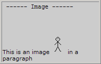

WML 链接和图像
链接
可以制作 WML 卡片来显示 WML 的锚功能。
<anchor>
<anchor> 标签总是要规定一个任务 ("go", "prev", 或 "refresh")。任务定义了当用户选择此链接时要做的事情。在本例中，当用户选择 "Next page"，其任务是 "前往 test.wml"：
<?xml version="1.0"?> <!DOCTYPE wml PUBLIC "-//WAPFORUM//DTD WML 1.1//EN" "http://www.wapforum.org/DTD/wml_1.1.xml"> <wml> <card title="Anchor Tag"> <p> <anchor>Next page <go href="test.wml"/> </anchor> </p> </card> </wml>
<a>
<a> 标签永远执行 "go" 任务，不带参数。下面的例子与那个 <anchor> 标签的例子起得作用是相同的：
<?xml version="1.0"?> <!DOCTYPE wml PUBLIC "-//WAPFORUM//DTD WML 1.1//EN" "http://www.wapforum.org/DTD/wml_1.1.xml"> <wml> <card title="A Tag"> <p> <a href="test.wml">Next page</a> </p> </card> </wml>
图像
可以制作 WML 卡片来显示图像：
<?xml version="1.0"?> <!DOCTYPE wml PUBLIC "-//WAPFORUM//DTD WML 1.1//EN" "http://www.wapforum.org/DTD/wml_1.1.xml"> <wml> <card title="Image"> <p> This is an image <img src="/images/stickman.wbmp" alt="stickman" /> in a paragraph </p> </card> </wml>
在您的移动电话显示屏上，结果也许类似这样：
请注意，.wbmp 是唯一可以显示在 WAP 浏览器中的图像类型。